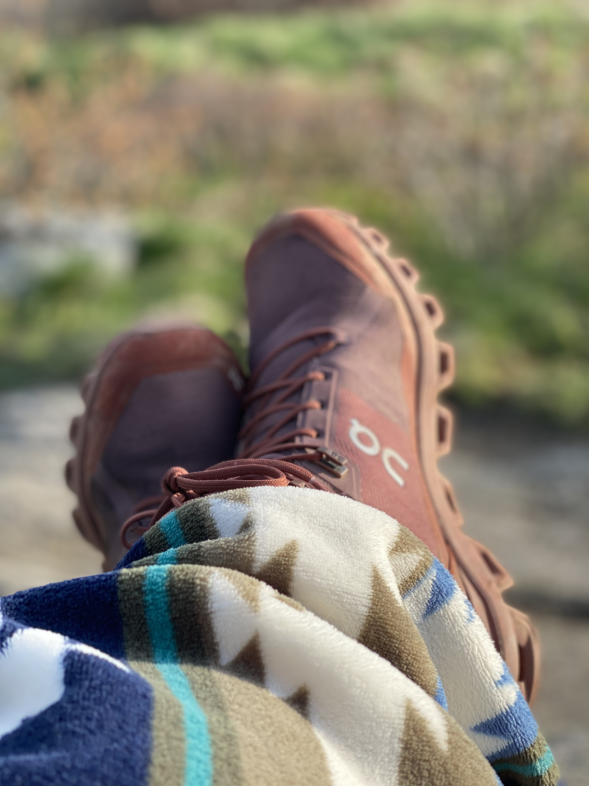

Getting lost in the woods...
Adventure Time is more than just a hiking experince. It's my way of reconnecting with myself and getting lost in the sounds and smells around me. It's enjoyment of watching my partner work his magic with this camera. Capturing the beauty, we overlook sometimes. It's the inner peace knowing I'm not along in this journey. It's the pure bliss when we reach the top and being about to appreciate the hardwork it took along the way, which makes it all worthwhile. It's my escape and my way back to reality. It helps me develop life skills that will assist me along this journey, we
